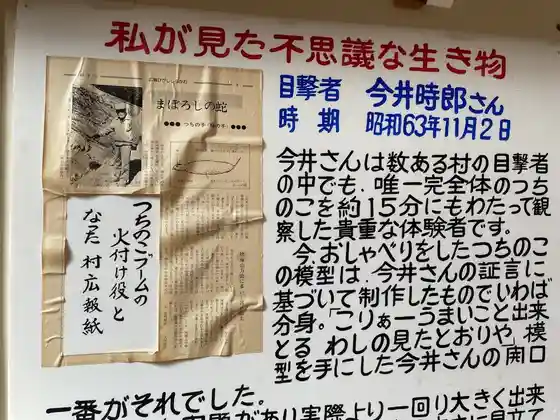
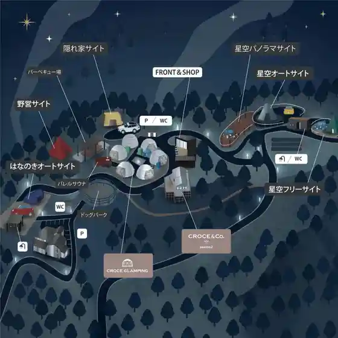
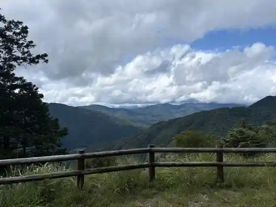

Roadside Station Cha Village Higashishirakawa
Higashishirakawa, Gifu · 0574-78-3123 · Official / source link
Tsuchi no Ko Kan
Higashishirakawa, Gifu · 0574-78-3192 · Official / source link

CROCE RESORT
Higashishirakawa, Gifu · 0574-78-3741 · Official / source link

Ontake Yama Tembo Chi
Higashishirakawa, Gifu · Official / source link

Miyashiro Oto Campground
Higashishirakawa, Gifu · 0574-78-2055 · Official / source link
Shinrin Rentarusabisu forenta Higashishirakawa Kyanpueria
Higashishirakawa, Gifu · 0574-78-2516 · Official / source link
Shirakawa Chaya
Higashishirakawa, Gifu · 0574-78-3358 · Official / source link
Oguchi Fudo Taki
Higashishirakawa, Gifu · Official / source link
Sachikoburaunii
Higashishirakawa, Gifu · Official / source link
Sakai Tani Shokei Ba
Higashishirakawa, Gifu · Official / source link
Kamabuchi Tofu Mise
Higashishirakawa, Gifu · 0574-78-2645 · Official / source link
Shita Oya Ta Fudo Taki
Higashishirakawa, Gifu · Official / source link
Go Suke no Taki Park
Higashishirakawa, Gifu · Official / source link
Kuni Shitei Tennenkinembutsu (Etsu Hara Hana no Ki Jisei Chi)
Higashishirakawa, Gifu · Official / source link
Gifuto
Higashishirakawa, Gifu · Official / source link
Miyoshiya
Higashishirakawa, Gifu · 0574-78-2508 · Official / source link
n_chiffon
Higashishirakawa, Gifu · 090-8930-2528 · Official / source link
Cha no Sato Yasai Village
Higashishirakawa, Gifu · 0574-78-2626 · Official / source link
Yotsu Wari no Namuamidabutsu Hi
Higashishirakawa, Gifu · Official / source link
Shiro Kusa
Higashishirakawa, Gifu · 0574-78-2164 · Official / source link
Otome Falls
Higashishirakawa, Gifu · Official / source link
Hanryo Jiseki
Higashishirakawa, Gifu · Official / source link
Shirakawa Cha Hassho no Chi
Higashishirakawa, Gifu · Official / source link
Higashishirakawa Boju Hayashi Park
Higashishirakawa, Gifu · Official / source link